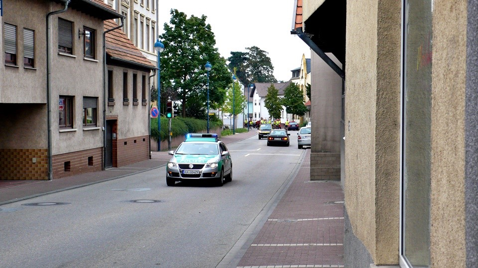
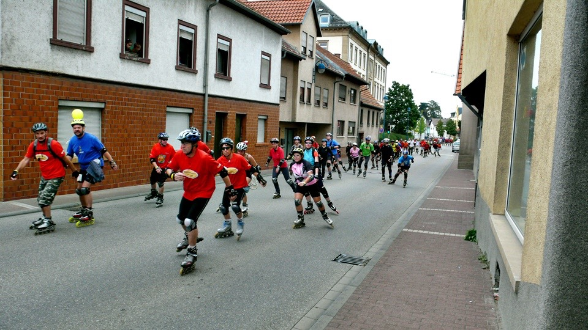

I kept thinking today is Sunday, so I thought no one would wake up early for work, so I let myself sleep until 7am.
I slept soundly in the tent for 9 hours, then I wondered how come it is very loud outside,
after getting out of the tent I realized it was Saturday today.
I estimate I will arrive at my destination on September 12, 2008,
counting the days, if lucky; it will be in Paris next Wednesday. Then the long trip will end.
Once I start missing home the time starts to pass slowly, if not counting today,
just count from the Germany/France border, just 3.5 more days riding to Paris.
It is scary counting the days backwards. After collecting all my things, this is my last day in Germany.
It is hard to determine whether today’s weather is good or bad, but at least it didn’t start raining when I got up.
But the clouds are covered with dark clouds, just the same as every other day.
Even though I had though I need to hurry to finish the last day in Germany,
but after studying the map last night I found I am not very far from the border, but I had thought I am in the middle of Germany.
After getting into Germany, there wasn’t a day I didn’t get lost,
turning east and west but at least I am getting going towards the southwest.
But too bad I rode too much extra road. Before I left,
I found another place to write the travel journal, this looks like some activity center that hasn’t opened for the day yet.
After finishing writing the travel journal, I used wireless Internet to get the journal online.
I absolutely love the fact Europe has high Internet coverage.
I can say as long as there are homes, there is Internet coverage.
Two photos, some small paragraph, but I spent the whole morning doing this; it was noon by the time I left.
I kept thinking since I am not far from the border, no hurry, I can get there easily.
Yes, it isn’t far away, about 100km (62 miles) but the path isn’t that easy.
Minus getting lost, finding my way, getting around, and asking for direction, it isn’t easy at all.
As soon as I get into the city, I will be in panic mode.
Even if I follow signs, I will still get lost. I go around all the way, but I will end up in the same spot.
People in south Germany is very friendly, it has been a long time since people cheered for me when I ride the bike.
This is because in Europe, there are so many people like me traveling through on their bicycle.
Everyday I will see at least a dozen people like me. But the funny thing is, no one will stop and chit chats.
There is just time left for passing by, nodding the head and smile,
if I meet them in either Russia or Kazakhstan, then it will be totally different.
The map Peter gives me is very useful, but it is only for the big roads.
A lot of roads are cars only which is not shown on the map.
Then I will sigh when I get on the bike, opening the map and trying to figure out how can I go around this path,
trying to find substitute roads for bicycles only.
Good thing the signs are very clear, city names, distance, direction, as clear as the road signs,
but it is hard to determine which ones are bicycle allowed path.
They are not as clear as normal path; they are usually mixed with country roads, small bridges, and path between homes.
The worst thing is even though the signs are straight line, but when I ride it they aren’t straight but with twists and turns.
Besides, the bicycle lanes connect to each other, and I can’t determine which direction I am supposes to go.
Tons of cross roads, but generally there are no signs for those cross roads.
So every time I get away from the big roads, started using bicycle only path,
then the light inside me will tell me be ready to get lost, and the map won’t be any help either.
This is because bicycle paths are too small, the maps don’t show them,
so the only way to get out of the bicycle path maze is asking other bicycle rides or runners on the road.
Tomorrow is Sunday; all the stores will be closed.
On Saturday, there will be Farmer’s market, it looks very festive,
and they look like they are ready to close now, so the goods will be cheaper.

Taking the last working day to shop for some items in the grocery store.
I need to purchase today and tomorrow’s food, so 2 days worth of money I can spend.
I purchased 1 loaf of bread, some Prince chocolate cookie that I had purchased before, and some layered chocolate cookies.
The items at the grocery store are huge packages, so I should be ok eating those foods for 2 days.
When I got lost I passed by an airplane museum, they aren’t showing some old planes, but some very new passenger jet planes.
There are lots of people waiting in line to go inside.
I realized I passed by this place twice, because after I got lost, I came back again.
I had thought I left the city, but I didn’t get out of it, so I tried another path.
On the map, they use gray to signal city center, but the roads aren’t not shown in the map.
Actually this is good; otherwise the map will be too packed.
Ideally, it would be good to find the “i” sign when entering the city,
otherwise then I will have to use luck to get out of the city.
I took some big road earlier, turning around now I use bicycle path only, did you see the green bicycle signs?
Those roads are only for pedestrian and bicycle only, the view from the top of the bridge.
Ducks and more ducks, I shared a piece of toast with them.
But since I am counting all my food rations, so please consider I couldn’t share too much with you.
I will be grateful if you can sacrifice one of you guys for me.
I will see some yellow machine in the entrance of the city, on it says “SIE FAHREN”,
at first I didn’t know what it means, but every time I pass it there will be number showing.
But it doesn’t look like a thermometer, after looking at it for a while I realized it is speedometer.
This allows the driver entering the town to be aware how fast they are driving, so the driver will slow down.
Currently my speed is 15km/hour (9.315 miles/hour), after discovering what it is I rode back and forth few times,
I am curious how it works. Some random picture, one needs to be careful in Germany,
from planes, snows, and now even frogs.
Some unknown plant, there is reddish purple flowers, but no fruit, about 1.5m, the farmer is currently harvesting.
I feel special riding on bicycle lane today passing through fields.
Regardless what it is, they plant fields of everything, including radish, and it is planted on the whole field.
And all the radish plant is huge, yesterday I told Peter I have the urge to steal them when I saw them yesterday,
but I wouldn’t know how to cook them after I get them.
Entering the city again, and facing a cop. The motorcycle cop stopped all the cars on the road, even myself on the bicycle,
he signed me to stop on the side of the road. After the motorcycle cop is the car cop, wow, and the whole road with no car.
In Taiwan, this means some politician is passing through, but in Germany why would they need to stop everyone?

After the cop then comes a Smart car, behind it are roller skaters.
There are so many of them, about 300 or so, they all line up passing through, looks very dramatic.
When I took out the camera the passing by skaters will say hi, signaling the peace V sign, they look so happy.
So many people, how many people are there exactly?

Still not finished, it is like a lightening activity, suddenly lots of people, all skaters, and then suddenly all disappeared.
The last one following is an ambulance, and then another cop car.
The cops aren’t opening the road for some politicians, but ones who are enjoying sporting events.
Every time when I pass by trees with fruit I will go see if there is anything I can eat.
The left black fruit should be blueberry, the reddish one on the right I am not sure what it is.
The elementary school teacher taught me right, if I am not sure what it is, and then I shouldn’t put it in my mouth.
I will see tons of farm type things in the market, but how come I can’t find those fields outside?
All the fruit I picked ended up being apples, this is probably because I only know apples.
I am not eating very healthy lately, so I should pick some apples for food.
There are lots of varieties of apples; this type is different from the type I picked before.
All the ones here are red, very small, looks like some sweet apples.
I picked a few apples that looked good putting them in my pocket.
Before I eat them, I will have to remember to wipe them on my pants for cleanness.
I am very proud that I still remember basic hygiene, I found I haven’t washed this pants for a week.
The street lamps here must not be cold; there are lots of Morning Glory plants growing on it.
When the flowers bloom, the street lamp will become a huge bouquet of flowers.
The cities in Germany will have signs by the entrance displaying the name.
There will also be small letters underneath, just like a description, using 5 or 6 words describing this town’s specialty.
This town’s specialty is walls. Looking at the road passing through the walls then you will know why,
there are 2 small doors on the left and right for pedestrian and cyclist to pass through.
There are lots of tracks for this train station, so this must be a big stop.
Continuing riding toward the west, then I will enter towns with TGV.
Right now I am lost, I had just asked direction from another cyclist.
But the guy said he had just moved here earlier, and he is doesn’t know directions either.
I said that is ok, you can just pick a random direction; this is because I have been unlucky lately.
Good thing the guy picked the correct one, I left the town successfully.
Another time on the bridge I asked a couple for direction, they said just turn right ahead to get out of the town.
So I thought I understood and then waved good-bye.
After I got off the bridge turned left I met the same couple again.
The couple used hand signal to tell me I took the wrong turn, I should have turn the other direction.
I am total lost between left and right, but I can ride this far on my own.
I don’t get lost all the time, just sometimes, so this is amazing for me to get this far.
Even though riding bicycle only lanes makes feel I will get lost even more,
but everyone time when I see bicycle only lanes I have ride on it,
this is because the bike feels it is being respected for riding on it.
Here I can usually see the local cyclist that are nodding, weaving and smiling at me.
So the whole day I see lots of smiling Germans.
Every 10km (6.2 miles) or so, I will get into a new city, and then my trouble comes.
This time the town is hosting the music festival, so all the roads are closed.
Close off road is fine, but at least hang a U sign to let me know how I can go around these roads.
The festival location is at the city center, where all the big roads meets so I must crossing by here, but I am denied to pass through.
So I randomly trying to pass through, riding to the outskirts I see this map.
I came from the north, I need to go toward south, but now I am on the road on the right.
If I continue to ride, I don’t know where I will be. So I ended up riding for no reason,
I need to get back to the town with the road blocked off.
Since I am not allowed to pass through the big roads, then I will have to find bicycle lanes to pass through.
Going back to the music festival location, looking at the stage and the lots of food stands.
Even the blocked off road have tons of tables and chairs set up, everyone are eating and drinking beer.
It isn’t that I don’t have money; I just don’t have Euro on me.
After saving my money living thrifty for a week, I am getting used to it.
My eyes no longer look for hotel and restaurant signs.
But looking at lots of wonderful food in front of me, plate after plate,
with the tourist eating all of it, this really blows my ego for trying to save money.
So I opened the chocolate cookies to eat, this way I won’t get so hungry. Looking at people eating good food is my weakness.
In order to get to the France/Germany border, I need to ride on the bicycle only lane,
this is because all the big streets forbidden bicycles.
However the road conditions are very different. When I cross the forest the ground is dirt road.
But since I had just changed to new tires, it is easy to ride on dirt road.
But which road should I take?
The place I am going is called Ettlingen, the sign points to the right,
but there is no right at this crossroads, so I randomly picked one directly.
Then at the next crossroad I found all 3 signs says Ettlingen, so which way should I take?
Looking at where the sun is setting, it is right going toward the west.
Even though the bicycle lanes are this hard to figure out, there should be way to get on the correct road even with some twist and turns.
After passing through the forest I saw the big road underneath, leading toward the place I am going to.
There are motorcycles on the road, but it does not allow bicycles, very not fair.
After passing through this sky bridge I will get into another forest.
I kept asking for directions from people who seem nice, but the answer I got are all the same.
I can get there regardless which direction I take.
Just then an older couple walking out of the forest, they are picking walnuts while walking, all wrapped up in some napkins.
They give all the walnuts to me.
I had thought walnuts need to be cooked first, but apparently walnuts can be eaten raw.
I used my foot to crush the hard shell, the inside nut is white, yummy, and healthy.
Free food coming my way. This couple also told me I could get to Ettlingen regardless which direction I take,
so I decided to ask another way.
Which direction do I need to take to get to France? Just one answer for this, going toward west.
Finally passing through the thick forest, back on the paved road,
however there are no street sign here just like bicycle lanes.
I continue to ask for direction, hoping before sun down I can find a place to rest.
I had thought I needed to sleep inside the forest tonight; the thought had worried me earlier.
But I saw sunset today, the sun already gone down for the day.
The clouds look like it will break, I will see in the next few days if the weather will get better.
Because I took bicycle lanes today so I got lost quit a bit,
but because I am taking the bicycle lanes I can cross through those no bike roads.
If there is a map of bicycle lanes on hand, then riding in Germany will be God send.
Because I had gotten lost, so I didn’t get a chance to enter France today, but at least I am getting toward the border.
Right now I am in between Germany and France, a river separates the two countries.
Tomorrow I will need to figure out how to cross the river, either by boat or whatever.
Then after getting into France, I will need to climb some mountains that will waste a day.
There is about 400km (248 miles) left from where I am straight to Paris, but riding a bike is about 500km (310 miles) or so.
If takes 3.5 days to ride, then each day I need to ride at least 150km (93 miles).
Right now I am following my original plan to reach Paris.
If once I enter France I can’t update the travel blogs that means I don’t have 3-4 hours of free time every day to write the travel blogs.
Today’s blog I am able to finish before going to bed, this is because I found store that is closed.
Sitting on the bench in front of the store wrapped up in the sleeping bag and typing on the laptop, I will sleep here tonight.
The safety in Europe is not much worry, 99% of the people are wealthier than I am, what is the point robbing a poor man?
Tomorrow I will have the whole day to ride the bike, after I wake up it will be the start of France.